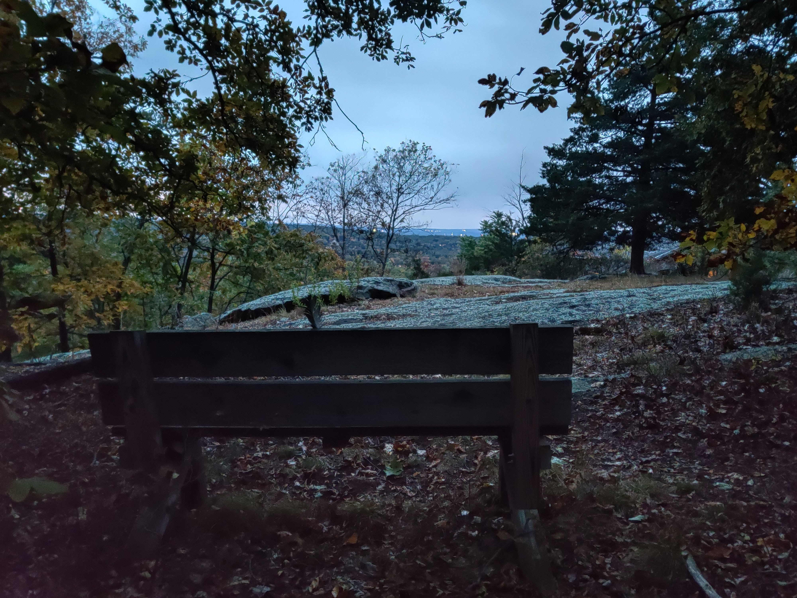
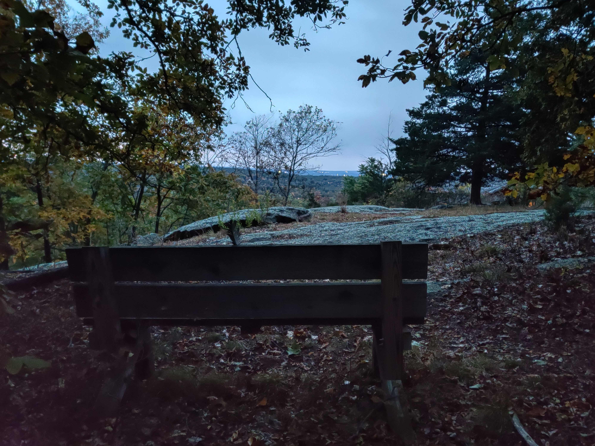

Running likely provides some of the best and most ample opportunities to photograph one's journey exploring the outdoors and documenting the joys and memories made revolving around the sport. I competitively ran cross country for over eight years, first joining a team all the way in elementary school, and ran dozens upon dozens of 5K races since, meeting so many phenominal athletes, many of which I'm still in contact with and occasionally run with almost a decade later. All these races and daily practices after school gave me countless exhilarating experiences and memories. Nonetheless, it's important to recognize the expansive social life a beginner will experience once getting involved in the sport, races, and running clubs! Furthermore, the areas that can be explored by the sport are endless, especially when getting off the treadmill and going on an adventure to new places in the outdoors. It's incredibly easy to document these areas and journeys and to compile some favorite areas to run; mine being the trail network at the end of my road I spent months exploring and mapping out! It's also especially satisfying seeing times decrease and distances increase as skill and endurance progresses, once again easy to document. Running in new areas, especially said forests, and seeing my perserverance in rough terrain intensify, motivated me to upgrade some of the bare minimum gear the sport requires: a beyond-modern pair of running shoes and smart watch. Putting a comftorable pair of running shoes on for the first time is a great way to convince someone to jog some miles, and I'm certain my documentation of my races, routes, results over time, and shoes will portray how outstanding the sport is! :)
Running certainly requires some gear though; proper running shoes foremost. I've worn Asics Cumulus for the first six years of XC and finally made the investment and switch to professional, top-of-the-line flagship plated shoes after high school and am now a stern believer in modern running shoe technology, wishing I made the switch so much earlier! Although not accumulated for my preference of trail running, the 1080s have been an invigorating pair of shoes to wear. An adequate running watch fits in this category aswell.
Surprisingly, some of my favorite running experiences and memories came out of the first few months of the COVID-19 pandemic. My dead-end road lies within the center of a forest and at the end of my street lies a trailhead that I always thought was just a simple small loop, perhaps a mile or less, and never explored it. One day while jogging during quarantine (since I didn't have much else to do) I decided to venture in and was dismayed: already a mile in and I reached a fork. I took one of the trails and reached another fork, took that one and reached a crossing with multiple paths, I took one of those and the trail just kept going: it wasn't just a mile loop. This was when I discovered a newfound love for trail running. I never looked a map so I could explore blindly and instead created my own. I spent every single day for the next several months waking up, eating, and running a new trail. This experience marked the beginning of my larger passion for trail running. Eventually when new trails were located many hours of running away, which took too long to reach, I researched the forest and found out there were roughly 60 miles of trails shared by multiple networks that my street had access to. I spent that summer running hundreds of miles, photographing everything interesting I encountered, and creating cherished memories. Since then, I have recommended trail running to those who claim they lack the stamina for long-distance running, and spending so much time outdoors remains among my favorite and most cherished recent experiences.
 



Lastly, some of the best satisfaction that comes out of exercising and working out are results. Seeing times get faster and distances longer through persistant training is an amazing feeling, and something much easier to take notice of and log than in other sports and forms of exercise. I've also taken a special interest in building my nerve endurance through gradual exposure to cold weather, and seeing my body's ability to withstand colder and colder temperatures in the winter has been thrilling. Seeing people's dumbfounded reactions to a small group of people running down College Ave in short sleeves and shorts in below-freezing temperatures at night is proof how someone's unfathomed physiological and mental goals can actually be within grasp and how running is a great candidate for a cardio that can help reach such aspirations.